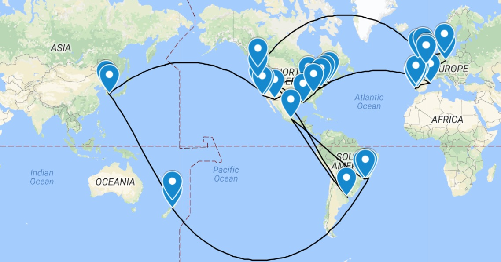
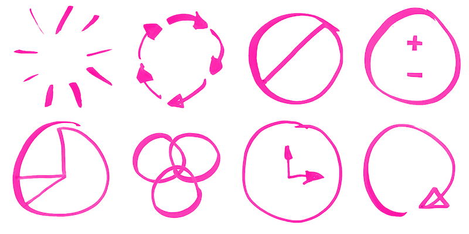
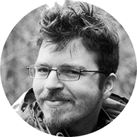
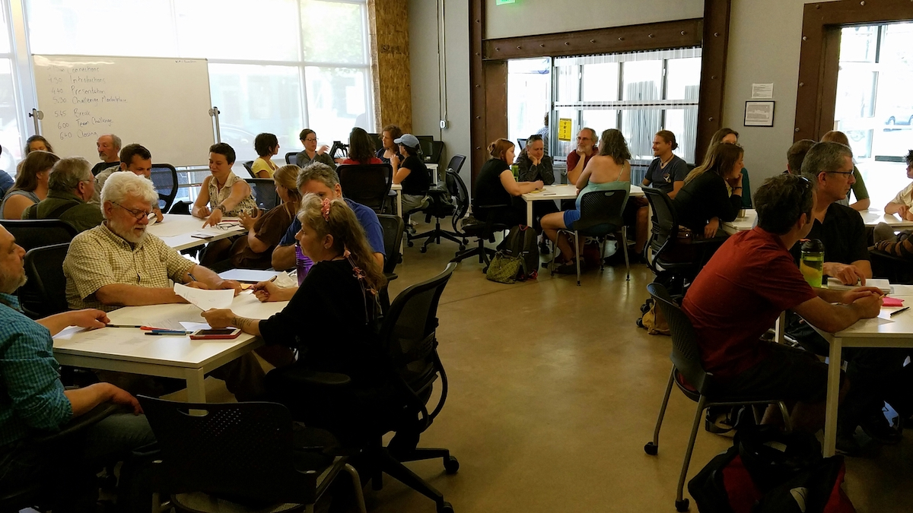
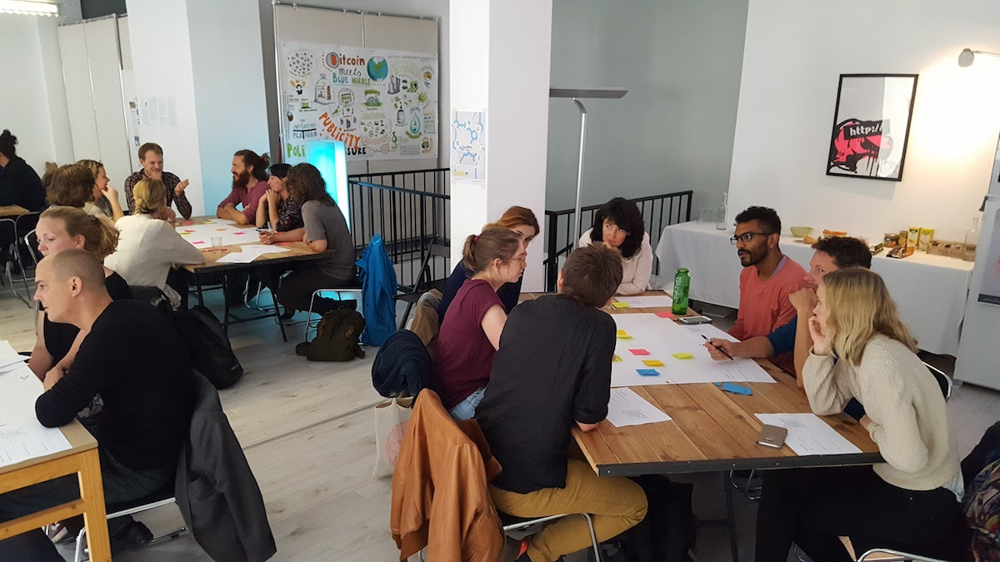
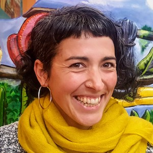

Rich and Nati have been engaged in the craft of decentralised organising for more than six years, starting with Occupy in 2011, co-founding Loomio (a worker co-op building software for collective decision-making) and Enspiral (a network of self-organising and purpose-driven companies).

This year we’re touring the world, meeting with all kinds of groups who are trying to work without hierarchical management structures: co-ops, startups, NGOs, companies, activist networks, etc. We host workshops to share the body of knowledge we're collecting along the way.
Wherever we go, we see that all of these groups face common challenges when they try to work without a traditional command-and-control structure. These groups tend to struggle for the same reasons. How can we be inclusive without spending all our time in meetings? How do we deal with power imbalances? How do undo our programming and develop an open, collaborative culture?

From these experiences we’ve gathered a set of 8 collaboration patterns. These are straightforward solutions that we've seen groups use to overcome the common failure points of "flat" organisations.
In the workshop we use a sequence of participatory exercises for people to learn by doing. Participants bring their real collaboration challenges to the event, and co-design solutions based on the insights we offer and the input of the other participants. You can find more about the workshop content and format in this article from a participant.
“Through these patterns I could see how my past adventures with non-hierarchical groups had fallen apart. It gave me new ideas to bring back to my own fledgling cooperative. I imagine that everyone in the room was experiencing a similar revelation; the uncovering of something known but also unnamed, the implicit patterns that are present in every group of humans, which so often are never identified, seemed here to be explicit, finally.” Continue reading... Drew Hornbein, Good Good Work

We intend to keep travelling in 2018. If you want to work together to co-host an event, or you want to discuss the idea, we’d love to hear from you! Contact Rich (rich@loomio.org) or Nati (nati@loomio.org).
We’re motivated by social impact rather than profit, so we aim to make these events as accessible as possible (while still covering our expenses). We adjust our fee depending on the organisation we are working with. Generally this is in the range of US$1-3000 for a 3-4 hour event for up to 40 people. Organisations usually offer the workshop free of charge for their members or for the community, or they recover their expenses by selling tickets to the public. Tickets have typically been sold on a sliding scale between $20-200 depending on the audience.
Here are some recent examples:

Richard D. Bartlett is one of the cofounders of Loomio, an open source software tool for collective decision-making. He's also a Catalyst at Enspiral: a network of self-organising companies who have been working without bosses since 2010. He's passionate about co-ownership, self-management, collaborative governance, and other ways of sneaking anarchism into respectable places. He writes at richdecibels.com.
Natalia Lombardo is a co-owner of Loomio, a co-operative social enterprise building tools for collective decision-making. She helps groups to cultivate collaborative culture through values-driven behaviours. Her background is in community development through local action, permaculture, and creative activism. Born in Argentina, living in New Zealand: she’s a bilingual translator that loves to bridge cultures.
{kind=link}
{kind=link}